sample 1.1
Voxel size 0.4815 µm (cubic) · volume 116 × 512 × 512 voxels (z, y, x) = 56 × 247 × 247 µm · exported 2026-10-15 from Texas red 20min_24.8.2026.lif.
Downloads: osteocyte_props.csv · dendrites.csv · summary.log · summary.json · scene.glb · scene_obj.zip
3D scene
Drag to rotate, scroll to zoom, right-drag to pan. One colour per osteocyte; cleaned ch0 nuclei inside the hull (bone side) in translucent blue. Depth (z) points up. scene_obj.zip has the same scene as OBJ + MTL in µm, with and without the nuclei.
Pipeline counts
| stage | count |
|---|---|
| watershed regions | 164 |
| >= 100 voxels and > 1 vox inside xy hull (pass 1) | 111 |
| > 0 vox inside hull without soft tissue (pass 2) | 97 |
| removed: far side of soft tissue | 1 |
| removed: no nucleus | 43 |
| split by nuclei | 4 |
| removed: flat | 7 |
| surviving osteocytes | 51 |
| nuclei (cleaned ch0) | 104 |
| inside hull, bone side | 95 |
| detected | 46 |
| soft tissue | 7 |
| labelled, rejected | 21 |
| no ch1 label | 21 |
| inside hull, not labelled as osteocyte (rejected + no ch1) | 42 |
| protrusions reaching >= 2.0 µm | 370 |
| dendrites (rods, counted) | 364 |
| flat parts of the body (sheets, not counted) | 6 |
Osteocytes
| label | volume (µm³) | surface (µm²) | axis 1 (µm) | axis 2 (µm) | axis 3 (µm) | flatness | nuclei | nucleus (µm³) | dendrites | reach mean (µm) | reach sd (µm) | reach max (µm) | path mean (µm) |
|---|---|---|---|---|---|---|---|---|---|---|---|---|---|
| 2 | 1298 | 1680 | 34.43 | 16.71 | 13.81 | 0.83 | 1 | 85.27 | 5 | 3.10 | 2.16 | 6.96 | 6.31 |
| 3 | 2502 | 3783 | 75.66 | 33.78 | 9.30 | 0.28 | 1 | 139 | 16 | 3.26 | 0.89 | 5.19 | 10.35 |
| 5 | 2796 | 3307 | 52.15 | 27.23 | 7.23 | 0.27 | 1 | 227 | 8 | 3.14 | 1.60 | 6.96 | 15.60 |
| 15 | 1429 | 2362 | 40.34 | 23.28 | 6.65 | 0.29 | 1 | 55.02 | 9 | 5.76 | 3.79 | 15.07 | 16.70 |
| 19 | 1007 | 1518 | 39.38 | 14.37 | 7.43 | 0.52 | 1 | 34.15 | 2 | 6.85 | 5.33 | 10.61 | 21.45 |
| 23 | 137 | 277 | 14.89 | 7.21 | 4.99 | 0.69 | 0 | 60.61 | 0 | ||||
| 24 | 744 | 971 | 33.43 | 11.47 | 5.05 | 0.44 | 1 | 45.87 | 2 | 2.28 | 0.11 | 2.36 | 2.70 |
| 26 | 1085 | 1646 | 38.27 | 19.76 | 7.82 | 0.40 | 0 | 99.33 | 3 | 3.08 | 0.54 | 3.40 | 8.08 |
| 27 | 1672 | 2151 | 39.14 | 15.31 | 11.52 | 0.75 | 1 | 52.46 | 11 | 7.84 | 6.16 | 19.82 | 11.11 |
| 29 | 695 | 1114 | 39.17 | 14.91 | 8.50 | 0.57 | 1 | 40.29 | 14 | 4.64 | 4.38 | 15.98 | 3.67 |
| 32 | 1048 | 1553 | 32.81 | 19.85 | 6.51 | 0.33 | 1 | 43.98 | 8 | 3.56 | 1.43 | 5.30 | 7.90 |
| 33 | 2194 | 3052 | 42.68 | 19.55 | 14.09 | 0.72 | 1 | 39.62 | 19 | 6.25 | 4.46 | 17.87 | 10.17 |
| 34 | 1865 | 1858 | 24.82 | 19.03 | 12.35 | 0.65 | 1 | 43.98 | 7 | 4.51 | 2.80 | 10.13 | 5.46 |
| 36 | 1161 | 1784 | 47.25 | 16.16 | 7.19 | 0.45 | 1 | 51.45 | 6 | 5.11 | 2.75 | 9.84 | 25.20 |
| 37 | 2530 | 3194 | 39.35 | 23.53 | 11.58 | 0.49 | 1 | 43.08 | 19 | 5.56 | 4.11 | 20.24 | 11.47 |
| 45 | 1114 | 921 | 18.85 | 13.92 | 10.23 | 0.74 | 1 | 305 | 0 | ||||
| 46 | 1145 | 1585 | 41.83 | 18.20 | 5.97 | 0.33 | 1 | 114 | 5 | 6.04 | 3.22 | 10.73 | 11.49 |
| 49 | 832 | 1181 | 35.97 | 12.80 | 7.68 | 0.60 | 1 | 44.53 | 4 | 8.18 | 5.28 | 13.39 | 13.28 |
| 59 | 2133 | 2601 | 65.01 | 18.31 | 5.30 | 0.29 | 1 | 265 | 8 | 3.78 | 1.99 | 7.55 | 11.30 |
| 62 | 173 | 308 | 15.95 | 9.65 | 2.64 | 0.27 | 1 | 27.90 | 2 | 2.82 | 1.02 | 3.54 | 11.40 |
| 64 | 1349 | 1908 | 36.77 | 18.30 | 8.94 | 0.49 | 1 | 55.14 | 10 | 4.08 | 3.01 | 11.35 | 12.21 |
| 69 | 415 | 570 | 22.65 | 10.60 | 5.88 | 0.56 | 1 | 33.60 | 4 | 6.78 | 3.84 | 12.08 | 5.75 |
| 71 | 1246 | 1392 | 38.54 | 13.63 | 6.20 | 0.46 | 1 | 77.46 | 3 | 2.49 | 0.41 | 2.85 | 2.68 |
| 82 | 169 | 317 | 18.87 | 6.25 | 3.26 | 0.52 | 1 | 38.17 | 2 | 2.85 | 0.98 | 3.54 | 5.25 |
| 84 | 880 | 881 | 26.55 | 9.97 | 8.45 | 0.85 | 1 | 103 | 3 | 2.43 | 0.29 | 2.72 | 3.82 |
| 85 | 1364 | 1819 | 32.47 | 16.78 | 9.82 | 0.59 | 1 | 86.39 | 10 | 4.04 | 4.40 | 16.43 | 7.11 |
| 86 | 564 | 669 | 28.64 | 8.56 | 5.40 | 0.63 | 1 | 33.26 | 4 | 3.53 | 0.87 | 4.79 | 2.03 |
| 88 | 386 | 610 | 31.83 | 8.12 | 5.23 | 0.64 | 1 | 33.48 | 3 | 5.04 | 2.50 | 6.55 | 3.70 |
| 96 | 1120 | 1329 | 17.89 | 14.82 | 12.22 | 0.82 | 1 | 33.82 | 8 | 4.23 | 1.64 | 7.01 | 8.85 |
| 105 | 1417 | 1742 | 23.67 | 16.36 | 12.93 | 0.79 | 1 | 62.95 | 9 | 3.28 | 0.93 | 4.79 | 7.92 |
| 106 | 386 | 585 | 23.55 | 9.10 | 4.92 | 0.54 | 1 | 35.16 | 4 | 5.37 | 1.96 | 7.27 | 7.65 |
| 110 | 918 | 1271 | 30.10 | 15.27 | 6.04 | 0.40 | 1 | 28.35 | 4 | 4.22 | 0.87 | 5.32 | 16.34 |
| 111 | 1280 | 1502 | 30.83 | 10.86 | 10.05 | 0.93 | 1 | 36.05 | 10 | 4.38 | 2.31 | 9.59 | 7.49 |
| 116 | 1088 | 1269 | 25.71 | 13.39 | 8.50 | 0.63 | 1 | 26.79 | 7 | 4.53 | 2.06 | 8.57 | 7.50 |
| 119 | 702 | 973 | 28.48 | 11.18 | 9.71 | 0.87 | 1 | 30.25 | 7 | 3.23 | 1.17 | 5.16 | 6.72 |
| 130 | 3118 | 3059 | 42.44 | 21.57 | 13.22 | 0.61 | 1 | 22.66 | 8 | 3.22 | 1.48 | 6.50 | 7.95 |
| 141 | 4689 | 4581 | 43.26 | 33.91 | 12.31 | 0.36 | 1 | 59.04 | 13 | 4.10 | 1.86 | 9.08 | 11.36 |
| 142 | 602 | 1176 | 22.74 | 13.13 | 8.58 | 0.65 | 1 | 79.13 | 3 | 3.78 | 0.86 | 4.64 | 33.06 |
| 146 | 1863 | 2605 | 47.06 | 21.26 | 7.76 | 0.37 | 1 | 27.12 | 5 | 3.72 | 1.65 | 6.50 | 15.48 |
| 150 | 1629 | 2201 | 26.59 | 22.46 | 9.41 | 0.42 | 1 | 24.78 | 10 | 3.20 | 1.10 | 5.30 | 10.87 |
| 151 | 4360 | 3970 | 38.00 | 25.32 | 14.40 | 0.57 | 1 | 89.07 | 13 | 3.88 | 1.91 | 9.11 | 6.91 |
| 154 | 4369 | 5689 | 62.26 | 32.18 | 14.42 | 0.45 | 1 | 25.45 | 14 | 3.63 | 2.17 | 9.27 | 19.09 |
| 156 | 3812 | 4160 | 49.93 | 19.71 | 13.78 | 0.70 | 1 | 24.33 | 14 | 3.35 | 1.68 | 7.47 | 14.89 |
| 182 | 1532 | 1809 | 22.64 | 19.02 | 10.67 | 0.56 | 1 | 24.67 | 5 | 3.72 | 1.59 | 5.72 | 18.98 |
| 190 | 2573 | 2678 | 34.24 | 20.22 | 10.76 | 0.53 | 1 | 45.87 | 7 | 2.50 | 0.41 | 3.23 | 7.97 |
| 206 | 2966 | 3332 | 37.69 | 26.55 | 11.52 | 0.43 | 1 | 67.08 | 10 | 3.53 | 1.80 | 7.84 | 19.35 |
| 227 | 91.74 | 146 | 6.82 | 6.02 | 5.52 | 0.92 | 0 | 50.45 | 0 | ||||
| 228 | 936 | 1254 | 18.15 | 17.82 | 12.38 | 0.69 | 1 | 99.22 | 5 | 2.71 | 0.53 | 3.40 | 3.30 |
| 229 | 991 | 1317 | 29.30 | 12.80 | 11.18 | 0.87 | 1 | 72.66 | 5 | 3.84 | 1.65 | 6.26 | 6.32 |
| 230 | 915 | 1466 | 28.11 | 21.17 | 6.06 | 0.29 | 0 | 77.12 | 10 | 4.17 | 1.48 | 7.09 | 10.44 |
| 231 | 1881 | 2173 | 42.13 | 14.04 | 12.57 | 0.90 | 0 | 35.60 | 6 | 3.12 | 1.10 | 4.54 | 6.36 |
Gallery
Rotating maximum-intensity projections of ch1 inside each osteocyte. Click a cell for its 3D mesh and the check of its dendrite count: ch1 inside the cell (left) beside the detection (right) as a depth-shaded surface, rotating, with the cell body grey, counted dendrites blue, flat parts of the body green and short protrusions orange.

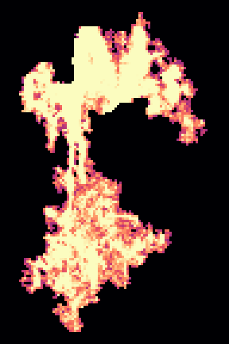
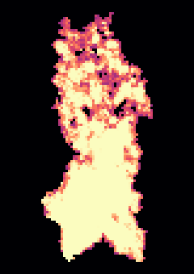
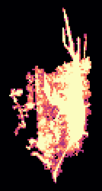

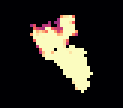
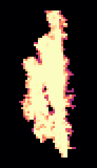
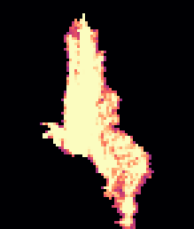
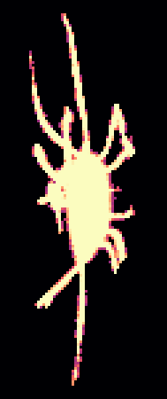

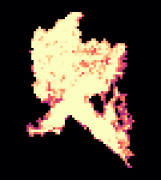
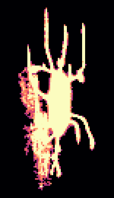

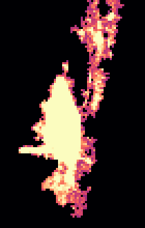
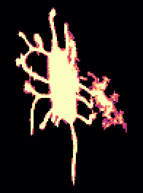
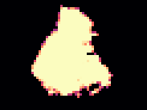

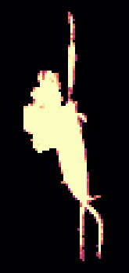
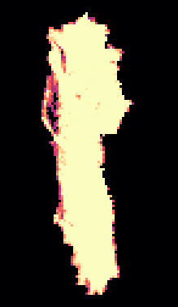
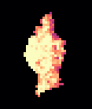
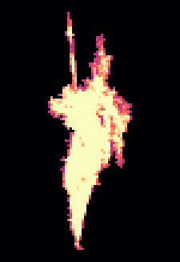
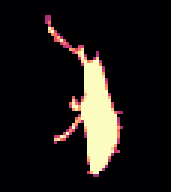

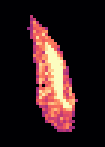
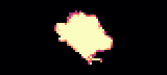
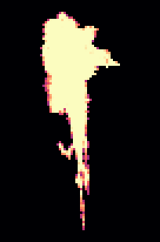
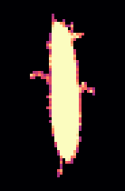

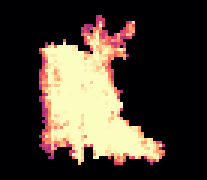

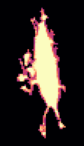
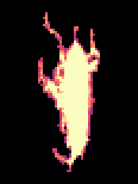
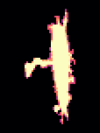
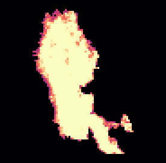
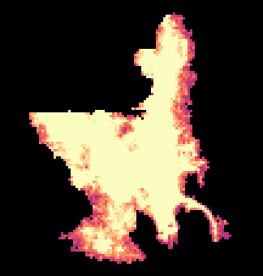
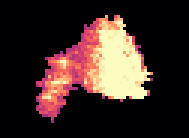
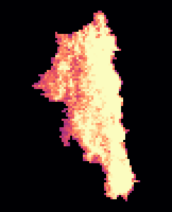
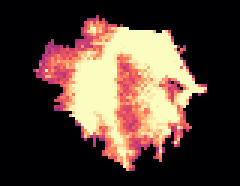
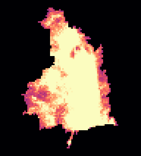

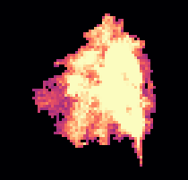
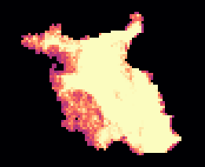
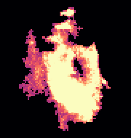
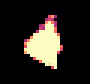
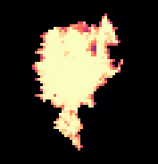

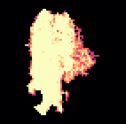
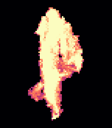